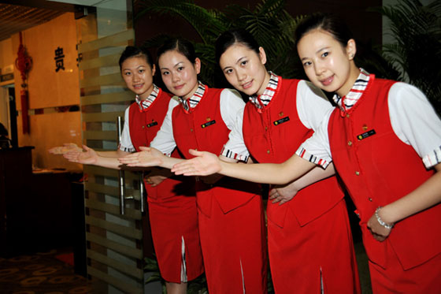

乐翔机场贵宾厅的各类服务信息 湖南空港乐翔机场贵宾厅是为您量身定做的贵宾旅行俱乐部，在候机楼区域拥有一万多平方米的贵宾休息区，备有专用安检通道，贵宾摆渡车辆，代办出港值机手续，并提供茶水、饮料、水果、点心、互联网商务通讯等服务，倾力打造集贵宾服务、订票、租车、旅游、会务等于一体的"无缝隙贵宾服务"品牌，令您在乐翔机场贵宾厅尽情享受时尚、超值、从容与尊贵。 "心尊享，乐飞翔"!
1、政务贵宾：
国家副部级以上的政府官员；
两院院士（中科院士和工程院士）；
部队少将以上级别的领导；
驻华大使及外国元首。
2、商务贵宾：
持有本公司个人专属卡的贵宾客户；
本公司冠名企业的贵宾卡客户以及战略合作企业指定的贵宾卡客户；
本公司合作企业的贵宾次卡使用贵宾客户。
乐翔会员贵宾卡客户。
3、F/C舱贵宾：
头等舱及公务舱旅客、航空公司贵宾卡客户
1、轻松拨打乐翔机场贵宾厅服务专线0731-84797605、84797606，即可咨询贵宾客户身份注册流程。
2、一个电话，专人上门办理注册及开卡服务事宜。
0731-84797605/84797606/84797607；13908458435
0731-84798666/84799666/84797619